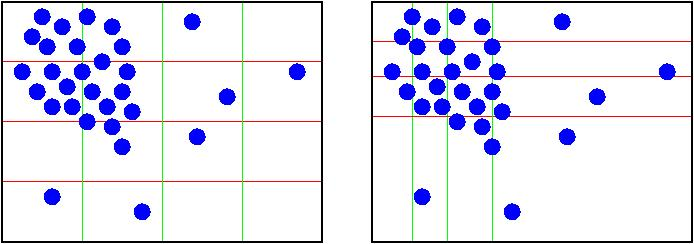

balance command¶
Syntax¶
balance keyword args ...
one or more keyword/arg pairs may be appended
keyword = x or y or z or dynamic or out
x args = uniform or Px-1 numbers between 0 and 1 uniform = evenly spaced cuts between processors in x dimension numbers = Px-1 ascending values between 0 and 1, Px - # of processors in x dimension y args = uniform or Py-1 numbers between 0 and 1 uniform = evenly spaced cuts between processors in y dimension numbers = Py-1 ascending values between 0 and 1, Py - # of processors in y dimension z args = uniform or Pz-1 numbers between 0 and 1 uniform = evenly spaced cuts between processors in z dimension numbers = Pz-1 ascending values between 0 and 1, Pz - # of processors in z dimension dynamic args = dimstr Niter thresh dimstr = sequence of letters containing "x" or "y" or "z", each not more than once Niter = # of times to iterate within each dimension of dimstr sequence thresh = stop balancing when this imbalance threshhold is reached out arg = filename filename = output file to write each processor's sub-domain to
Examples¶
balance x uniform y 0.4 0.5 0.6
balance dynamic xz 5 1.1
balance dynamic x 20 1.0 out tmp.balance
Description¶
This command adjusts the size of processor sub-domains within the simulation box, to attempt to balance the number of particles and thus the computational cost (load) evenly across processors. The load balancing is “static” in the sense that this command performs the balancing once, before or between simulations. The processor sub-domains will then remain static during the subsequent run. To perform “dynamic” balancing, see the fix balance command, which can adjust processor sub-domain sizes on-the-fly during a run.
Load-balancing is only useful if the particles in the simulation box have a spatially-varying density distribution. E.g. a model of a vapor/liquid interface, or a solid with an irregular-shaped geometry containing void regions. In this case, the LAMMPS default of dividing the simulation box volume into a regular-spaced grid of processor sub-domain, with one equal-volume sub-domain per processor, may assign very different numbers of particles per processor. This can lead to poor performance in a scalability sense, when the simulation is run in parallel.
Note that the processors command gives you control over how the box volume is split across processors. Specifically, for a Px by Py by Pz grid of processors, it chooses or lets you choose Px, Py, and Pz, subject to the constraint that Px * Py * Pz = P, the total number of processors. This is sufficient to achieve good load-balance for many models on many processor counts. However, all the processor sub-domains will still be the same shape and have the same volume.
This command does not alter the topology of the Px by Py by Pz grid or processors. But it shifts the cutting planes between processors (in 3d, or lines in 2d), which adjusts the volume (area in 2d) assigned to each processor, as in the following 2d diagram. The left diagram is the default partitioning of the simulation box across processors (one sub-box for each of 16 processors); the right diagram is after balancing.
When the balance command completes, it prints out the final positions of all cutting planes in each of the 3 dimensions (as fractions of the box length). It also prints statistics about its results, including the change in “imbalance factor”. This factor is defined as the maximum number of particles owned by any processor, divided by the average number of particles per processor. Thus an imbalance factor of 1.0 is perfect balance. For 10000 particles running on 10 processors, if the most heavily loaded processor has 1200 particles, then the factor is 1.2, meaning there is a 20% imbalance. The change in the maximum number of particles (on any processor) is also printed.
Warning
This command attempts to minimize the imbalance factor, as defined above. But because of the topology constraint that only the cutting planes (lines) between processors are moved, there are many irregular distributions of particles, where this factor cannot be shrunk to 1.0, particularly in 3d. Also, computational cost is not strictly proportional to particle count, and changing the relative size and shape of processor sub-domains may lead to additional computational and communication overheads, e.g. in the PPPM solver used via the kspace_style command. Thus you should benchmark the run times of your simulation before and after balancing.
The x, y, and z keywords adjust the position of cutting planes between processor sub-domains in a specific dimension. The uniform argument spaces the planes evenly, as in the left diagram above. The numeric argument requires you to list Ps-1 numbers that specify the position of the cutting planes. This requires that you know Ps = Px or Py or Pz = the number of processors assigned by LAMMPS to the relevant dimension. This assignment is made (and the Px, Py, Pz values printed out) when the simulation box is created by the “create_box” or “read_data” or “read_restart” command and is influenced by the settings of the “processors” command.
Each of the numeric values must be between 0 and 1, and they must be listed in ascending order. They represent the fractional position of the cutting place. The left (or lower) edge of the box is 0.0, and the right (or upper) edge is 1.0. Neither of these values is specified. Only the interior Ps-1 positions are specified. Thus is there are 2 processors in the x dimension, you specify a single value such as 0.75, which would make the left processor’s sub-domain 3x larger than the right processor’s sub-domain.
The dynamic keyword changes the cutting planes between processors in an iterative fashion, seeking to reduce the imbalance factor, similar to how the fix balance command operates. Note that this keyword begins its operation from the current processor partitioning, which could be uniform or the result of a previous balance command.
The dimstr argument is a string of characters, each of which must be an “x” or “y” or “z”. Eacn character can appear zero or one time, since there is no advantage to balancing on a dimension more than once. You should normally only list dimensions where you expect there to be a density variation in the particles.
Balancing proceeds by adjusting the cutting planes in each of the dimensions listed in dimstr, one dimension at a time. For a single dimension, the balancing operation (described below) is iterated on up to Niter times. After each dimension finishes, the imbalance factor is re-computed, and the balancing operation halts if the thresh criterion is met.
A rebalance operation in a single dimension is performed using a recursive multisectioning algorithm, where the position of each cutting plane (line in 2d) in the dimension is adjusted independently. This is similar to a recursive bisectioning (RCB) for a single value, except that the bounds used for each bisectioning take advantage of information from neighboring cuts if possible. At each iteration, the count of particles on either side of each plane is tallied. If the counts do not match the target value for the plane, the position of the cut is adjusted to be halfway between a low and high bound. The low and high bounds are adjusted on each iteration, using new count information, so that they become closer together over time. Thus as the recursion progresses, the count of particles on either side of the plane gets closer to the target value.
Once the rebalancing is complete and final processor sub-domains assigned, particles are migrated to their new owning processor, and the balance procedure ends.
Warning
At each rebalance operation, the RCB for each cutting plane (line in 2d) typically starts with low and high bounds separated by the extent of a processor’s sub-domain in one dimension. The size of this bracketing region shrinks by 1/2 every iteration. Thus if Niter is specified as 10, the cutting plane will typically be positioned to 1 part in 1000 accuracy (relative to the perfect target position). For Niter = 20, it will be accurate to 1 part in a million. Thus there is no need ot set Niter to a large value. LAMMPS will check if the threshold accuracy is reached (in a dimension) is less iterations than Niter and exit early. However, Niter should also not be set too small, since it will take roughly the same number of iterations to converge even if the cutting plane is initially close to the target value.
Warning
If a portion of your system is a perfect lattice, e.g. the initial system is generated by the create_atoms command, then the balancer may be unable to achieve exact balance. I.e. entire lattice planes will be owned or not owned by a single processor. So you you should not expect to achieve perfect balance in this case.
The out keyword writes a text file to the specified filename with the results of the balancing operation. The file contains the bounds of the sub-domain for each processor after the balancing operation completes. The format of the file is compatible with the Pizza.py mdump tool which has support for manipulating and visualizing mesh files. An example is shown here for a balancing by 4 processors for a 2d problem:
ITEM: TIMESTEP
0
ITEM: NUMBER OF SQUARES
4
ITEM: SQUARES
1 1 1 2 7 6
2 2 2 3 8 7
3 3 3 4 9 8
4 4 4 5 10 9
ITEM: TIMESTEP
0
ITEM: NUMBER OF NODES
10
ITEM: BOX BOUNDS
-153.919 184.703
0 15.3919
-0.769595 0.769595
ITEM: NODES
1 1 -153.919 0 0
2 1 7.45545 0 0
3 1 14.7305 0 0
4 1 22.667 0 0
5 1 184.703 0 0
6 1 -153.919 15.3919 0
7 1 7.45545 15.3919 0
8 1 14.7305 15.3919 0
9 1 22.667 15.3919 0
10 1 184.703 15.3919 0
The “SQUARES” lists the node IDs of the 4 vertices in a rectangle for each processor (1 to 4). The first SQUARE 1 (for processor 0) is a rectangle of type 1 (equal to SQUARE ID) and contains vertices 1,2,7,6. The coordinates of all the vertices are listed in the NODES section. Note that the 4 sub-domains share vertices, so there are only 10 unique vertices in total.
For a 3d problem, the syntax is similar with “SQUARES” replaced by “CUBES”, and 8 vertices listed for each processor, instead of 4.
Restrictions¶
This command cannot be used together with meshes (e.g. a fix mesh/surface command)
The dynamic keyword cannot be used with the x, y, or z arguments.
For 2d simulations, the z keyword cannot be used. Nor can a “z” appear in dimstr for the dynamic keyword.